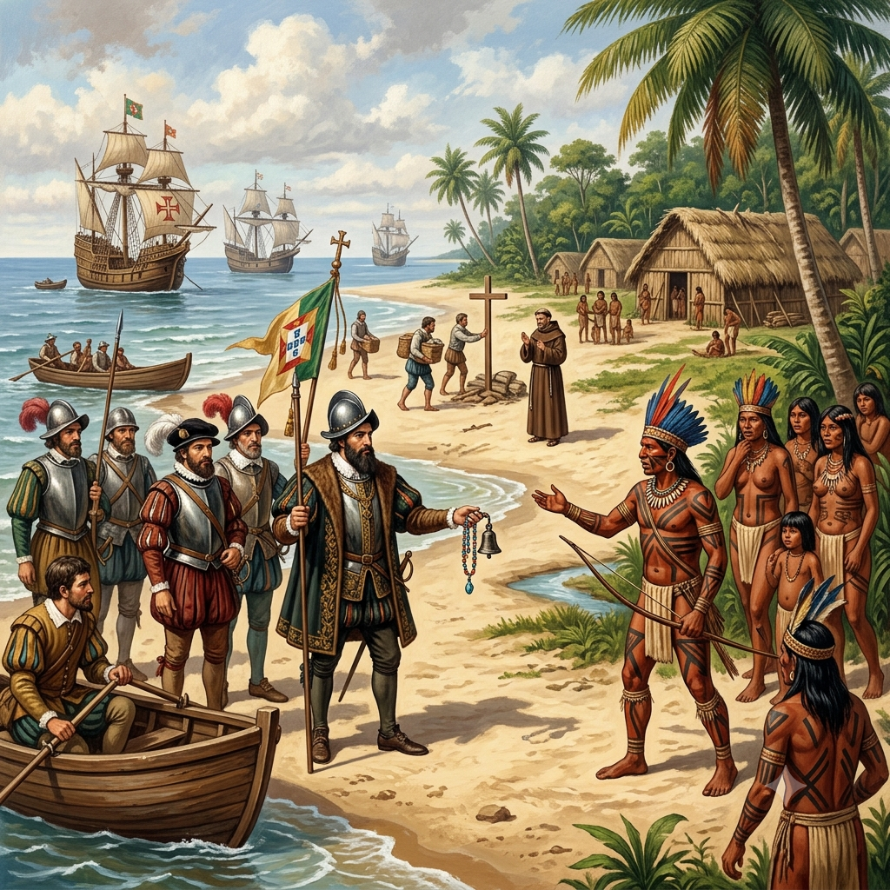
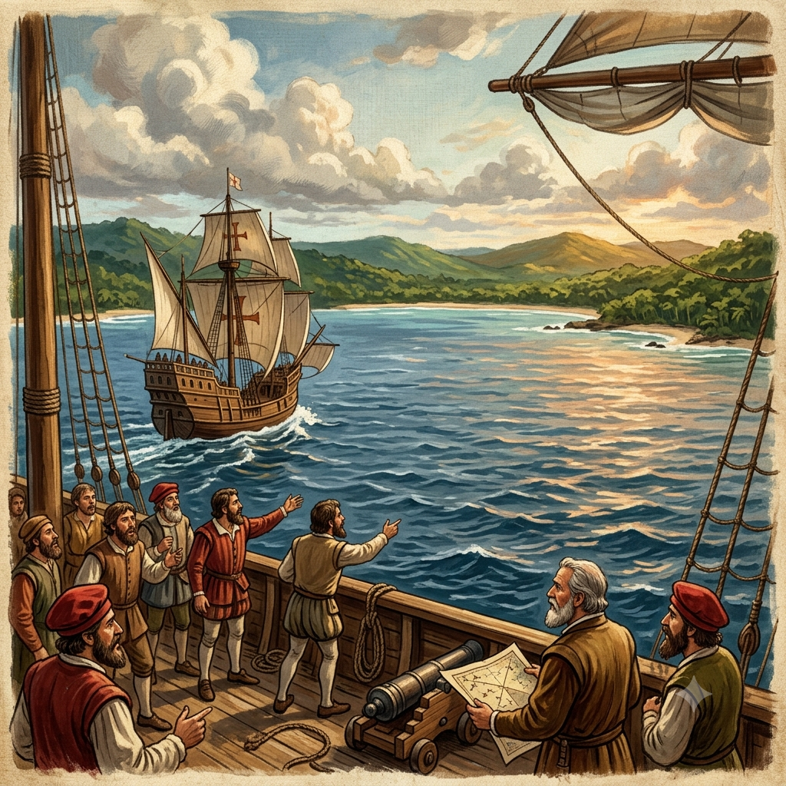

Meu primeiro post
Por: Victor Hugo
Boas-vindas ao meu primeiro site, aqui vou compartilhar o conhecimento sobre a historia do Brasil e como foi o processo de colonização dos portugueses.


A chegada dos Portugueses
Em 22 de abril de 1500, a frota comandada pelo navegador português Pedro Álvares Cabral avistou pela primeira vez as terras que hoje formam o Brasil. O primeiro ponto de terra firme avistado foi batizado de Monte Pascoal, no atual estado da Bahia. A expedição, que contava com 13 embarcações e tinha como objetivo oficial chegar às Índias para o comércio de especiarias, acabou realizando a posse do território em nome da Coroa Portuguesa, com base no Tratado de Tordesilhas. Esse evento marcou o encontro entre a cultura europeia e os povos indígenas que já habitavam o território há milhares de anos. A carta escrita por Pero Vaz de Caminha ao rei de Portugal registrou as primeiras impressões sobre a natureza exuberante e os hábitos dos nativos. A partir desse momento, iniciou-se o processo de colonização, responsável por transformar profundamente a demografia, a cultura e a história do país.
Para saber mais, clique aqui .